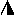

Rospuda
Spływ Rospudą jest doskonałym pomysłem na aktywne spędzenie przedłużonego weekendu w bliskim kontakcie z przyrodą, w pięknej i jeszcze bardzo mało zagospodarowanej okolicy. Rzeka i otaczające ją krajobrazy są malownicze, bardzo urozmaicone i nie zniszczone przez ludzi.
Opis na podstawie danych strony AW2P2 .
Od kilku lat, w wakacje poziom wody w rzece jest bardzo niski: średnio mamy po 50% pływania i holowania ( aż do 49 km). Hydrologicznie Rospuda to górny bieg Netty.
Ostatnia aktualizacja: 2010-07-22 11:55:06
GPX,
XML mieszany - górna Rospuda -
U4, ZWC, ***, KL1,
W swym górnym biegu Rospuda przepływa przez wąskie jeziora leżące pomiędzy wysokimi trawiastymi wzgórzami. Pojawiające się na wzgórzach świerki i porozrzucane na brzegach jezior głazy nadają krajobrazowi nieco górski wygląd. Na odcinkach pomiędzy jeziorami dno rzeki jest kamieniste, nurt szybki i występują liczne przełomy.
0  | |  | Jest tu nieźle urządzone obozowisko na kilka
namiotów - własność gospodarza z pobliskiej wioski Supienie. |
| Przesmyk pomiędzy jeziorem Czarnym i jeziorem Rospuda Filipowska. Prowadzi tędy asfaltowa droga, w odległości kilkunastu metrów od niej znajduje się dogodny dostęp do wody. |
|
| 5.8 | | Kamienny mostek pomiędzy J. Rospuda i J. Kamiennym. |
| Jezioro Rospuda kończy się wąskim i niskim tunelem, za nim krótki przesmyk wyprowadza na niewielkie jezioro Kamienne. |
|
| Filipów |
| 8.6 | | Ujście Rospudy z j. Kamiennego. |
| Na południowym końcu jeziora Kamiennego kolejny mostek z tunelem, za nim miejscowość Filipów. |
|
| 8.9 | |
| 11.4 | | Ujście Rospudy do J. Długiego. |
|
| 12.7 | | Most na drodze Szafranki - Garbaś. |
|
| 15.5 | | Ujście Rospudy do J. Garbaś. |
|
| 15.7 | | Bardzo komfortowa łączka biwakowa na prawym brzegu J. Garbaś, na przeciwko miejsca, w którym wpada Rospuda. |
|
| 16.7 | | Rospuda wypływa z J. Garbaś. |
| Mostek-kładka |
|
| 18 | | Wypływ Rospudy z J. Głębokiego. |
|
mieszany - środkowa Rospuda -
U3, ZWB, ***, KL1,
W miarę posuwania się na południe teren staje się bardziej zalesiony - świerk zastępuje sosna. Brzegi w wielu miejscach są wysokie i strome, nurt nadal szybki, a liczne zakola i powalone drzewa urozmaicają ale i często bardzo utrudniają spływ. Stopniowo pojawia się więcej drzew liściastych, a rzekę otacza głęboka, mroczna zieleń.
| | | W pewnym momencie poziom wody podnosi się wyraźnie a nurt zanika - zbliżamy się do niewielkiej zapory przy młynie wodnym w Bakałarzewie. |
|
| | | Ryneczek handlowy znajduje się około 500m od mostu - naprzeciw siebie stały tam duży i niemal pusty sklep spółdzielczy (państwowy?) i mały prywatny, w którym półki uginały się od towarów. |
|
| 20.3 | | Połączenie Rospudy z J. Sumowo. |
|
| 23 | |
| 26.8 | | Połączenie Rospudy z J. Okrągłym. |
|
| 27 | |
| 28.4 | |
| 29.5 | | Nad j. Bolesty ok. 1km poniżej ujścia Rospudy do płn.
krańca jeziora, dwa dobre biwaki na prawym brzegu przy ujsciu rz. Czerwonka do jeziora. |
|
| 34.2 | |
| Małe Raczki |
| 35.5 | | Nurt przegradza tu tartak. |
| Wbrew temu co napisano w przewodniku kajak można przenieść ok. 50 m lewym brzegiem a nie 100 m prawym. |
| Pole biwakowe po lewej stronie |
 | W młynie bar |
|
| Raczki |
| 39 | | Rynek o 100m, kilka sklepów |
| Most drogowy |
|
| Dowspuda. |
| 40.5 | | Biwak w pobliżu pałacu LM Paca. |
|
| Dowspuda |
| | | Ruiny pałacu Ludwika Michała Paca (tego od znanego powiedzenia Pac wart pałaca). Park i zabezpieczone przed dalszym niszczeniem ruiny pałacu znajdują się w odległości kilkuset metrów od prawego brzegu rzeki. Z całej budowli pozostała tylko wieża zwana Bocianią i odbudowany fragment portyku, część pozostałych zabudowań okołopałacowych wykorzystują obecnie szkoły rolnicze. O historii pałacu i jego właściciela informuje tablica w parku. |
|
| 41 | | Kiepskie miejsce na biwak przy samym moście. |
| Mostek na lokalnej drodze. |
|
jezioro - Jezioro Necko -
U1, ZWA, **, KL2,
Końcowy odcinek spływu, około 3km, prowadzi znów przez jeziora - J. Rospuda Augustowska i J. Necko. Trawers tego ostatniego nie jest zbyt przyjemny z uwagi na spory ruch na wodzie w okolicy Augustowa - żaglówki, motorówki i skutery wodne.
| Chodorki |
| 43.3 | | Most na lokalnej drodze |
| Bar tuż za mostem |
|
rzeka - dolna Rospuda -
U1, ZWA, **, KL2,
W dolnym biegu Rospuda meandruje przez bagniste łąki otoczone liściastymi lasami Puszczy Augustowskiej. Wysokie trzciny porastające brzegi ograniczają widoczność i sprawiają wrażenie, że płynie się bardzo długim i krętym korytarzem. Trudno tu o miejsca biwakowe.
| Święte Miejsce |
| 49.2 | | Mostek w pobliżu Uroczyska Święte Miejsce. |
|
| 53 | | Mostek drogowy (ważny orientacyjnie) |
|
| 55 | | Pierwszy dobry biwak (prawy brzeg) |
|
| 56.5 | | Drugi dobry biwak (też prawy brzeg) |
|
| 60.3 | | Ujście do Rospudy połączonych rzek Szczeberki i Blizny. |
|
| 62.1 | | Ujście do północny kraniec J. Rospuda Augustowska. |
|
| 63.1 | | Na lewym brzegu półwysep "Goła Zośka" ze znamym kempingiem z wygodami. |
|
| Augustów |
| 65 | | Plaża w Augustowie, dogodne miejsce do zakończenia spływu. |
|
| |  | Wypożyczalnia kajaków pana Jana Wojtuszko; ul. Nadrzeczna 62A, 16-300 Augustów, tel. (87) 6447540. |
|
Materiał pochodzi z serwisu kajak.org.pl. 2022.